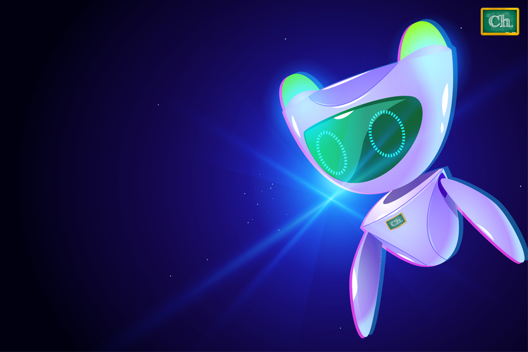

Chalkboard Vipa
Chalkboard Virtual Pronunciation Asistant es una herramienta que te ayudará a conocer la pronunciación de palabras o frases en Inglés. Sólo debes escribir la palabra o frase y seleccionar las palabras o texto que quieras escuchar.